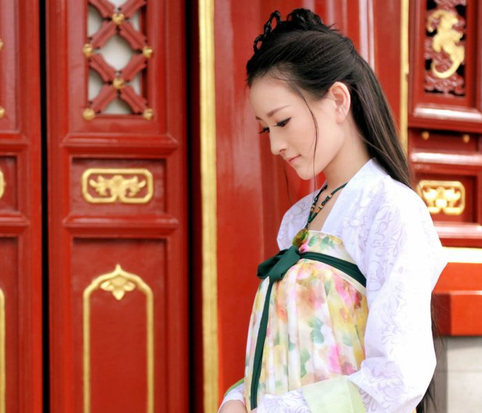

汉服，传承了四千多年的服饰，华夏文明的瑰宝
汉服，是中国汉族的传统服饰，曾被称为汉装、汉衣冠、衣冠、中国衣冠、华服等，被称为发展以及传承了四千多年的服饰体系。
汉服是从黄帝即位到明末，在这四千多年中，以华夏文化礼仪为中心，经过历代汉族王朝推崇周礼、象天法地而形成千年不变...
汉服，是中国汉族的传统服饰，曾被称为汉装、汉衣冠、衣冠、中国衣冠、华服等，被称为发展以及传承了四千多年的服饰体系。
汉服是从黄帝即位到明末，在这四千多年中，以华夏文化礼仪为中心，经过历代汉族王朝推崇周礼、象天法地而形成千年不变...
自黄帝、尧、舜垂衣裳而天下治，汉服已具基本形式，历经周朝礼法的继承，到了汉朝形成完善的衣冠体系并普及至民众，还通过儒家和中华法系影响了整个汉文化圈。 日本、朝鲜、越南均曾颁布法律效仿汉衣冠制度。
“汉服”的特点是交领右衽、以系带为主。交领指衣服前襟左右相交。 汉服的衣襟一般是向右掩（左前襟掩向右腋系带，将右襟掩覆于内，称右衽），称为右衽； 中国古代一些少数民族服装是向左掩，称为左衽，此状况从春秋时代已出现，论语中记载孔子曾说，若无管仲尊王攘夷，就会沦为异族统治而“被发左衽”。
汉服具备独特的形式，其典型特征是交领右衽、系带无扣，但实际上仍有其他款式。 汉语里和衣服相关的词汇，通通是汉服的特点。汉服的结构分为10个部分：领、襟、裾、袂、袪、袖、衿、衽、带、系。
一套完整的汉服通常有三层：小衣（内衣）、中衣、大衣。小衣包括汗衣（汗衫）、犊鼻裈。中衣包括上衣下裤、中单、曲领等。
大衣即外衣，如深衣、圆领袍、衣裳、袴褶、裙襦，还有外套如半臂、褙子等。此外，还有配饰如袜、帔、革带、玉带、銙等等。
明代前期的汉人服装一般用束带系扎，少用扣子。明代后期较多于显眼处使用纽扣，但与满清服饰有明显不同，见于女装及少数男装常服、军服、便服。
虽然是平面剪裁，但用料远远大于覆盖人体的需要。 在裁剪之时，看上去虽然是平面直线的，但是穿在人的身上，配合以束腰等手段，就会随着人体的结构，呈现出不同的线条，无论从正面、侧面、背面看，都十分动人， 和环境共同成为灵动的艺术品。这与中国文化中重视人与自然的共融关系，“万物与我为一”可谓互相辉映。
汉服不仅重视人体的各个侧面的线型，而且还注重人与环境之间，继而成为服饰的特色。 汉族传统服装中，贵族服饰的大袖，不仅是袖径的宽大，袖子的长度也十分长。官员与老人的袖子延至手后，可以挽回相当的长度。
汉服袖径宽大时可达四尺，这种宽大的剪裁，使得汉服在穿着起来之后，可以形成如行云流水般的流线，随风而动，但毫不拖拉，给人洒脱飘逸、仙风道骨的感觉。
自黄帝、尧、舜垂衣裳而天下治，汉服已具基本形式，历经周朝礼法的继承，到了汉朝形成完善的衣冠体系并普及至民众，还通过儒家和中华法系影响了整个汉文化圈。 日本、朝鲜、越南均曾颁布法律效仿汉衣冠制度。
“汉服”的特点是交领右衽、以系带为主。交领指衣服前襟左右相交。 汉服的衣襟一般是向右掩（左前襟掩向右腋系带，将右襟掩覆于内，称右衽），称为右衽； 中国古代一些少数民族服装是向左掩，称为左衽，此状况从春秋时代已出现，论语中记载孔子曾说，若无管仲尊王攘夷，就会沦为异族统治而“被发左衽”。
汉服具备独特的形式，其典型特征是交领右衽、系带无扣，但实际上仍有其他款式。 汉语里和衣服相关的词汇，通通是汉服的特点。汉服的结构分为10个部分：领、襟、裾、袂、袪、袖、衿、衽、带、系。
一套完整的汉服通常有三层：小衣（内衣）、中衣、大衣。小衣包括汗衣（汗衫）、犊鼻裈。中衣包括上衣下裤、中单、曲领等。 大衣即外衣，如深衣、圆领袍、衣裳、袴褶、裙襦，还有外套如半臂、褙子等。此外，还有配饰如袜、帔、革带、玉带、銙等等。
明代前期的汉人服装一般用束带系扎，少用扣子。明代后期较多于显眼处使用纽扣，但与满清服饰有明显不同，见于女装及少数男装常服、军服、便服。
虽然是平面剪裁，但用料远远大于覆盖人体的需要。 在裁剪之时，看上去虽然是平面直线的，但是穿在人的身上，配合以束腰等手段，就会随着人体的结构，呈现出不同的线条，无论从正面、侧面、背面看，都十分动人，
和环境共同成为灵动的艺术品。这与中国文化中重视人与自然的共融关系，“万物与我为一”可谓互相辉映。
汉服不仅重视人体的各个侧面的线型，而且还注重人与环境之间，继而成为服饰的特色。 汉族传统服装中，贵族服饰的大袖，不仅是袖径的宽大，袖子的长度也十分长。官员与老人的袖子延至手后，可以挽回相当的长度。
汉服袖径宽大时可达四尺，这种宽大的剪裁，使得汉服在穿着起来之后，可以形成如行云流水般的流线，随风而动，但毫不拖拉，给人洒脱飘逸、仙风道骨的感觉。